DeepSeek Harness 新特性与运行时机制调研
DeepSeek Harness 有哪些新的 Agent Harness 设计，这些设计如何工作，与当前 pinned OpenClaw 有哪些已验证差异，以及这些变化进一步给 Host CPU 带来什么工作负载。
0. 执行摘要
DeepSeek Harness 的关键变化，不是再给一个传统 ReAct 循环增加更多工具，而是重新组织 Agent Harness 的运行时边界。模型仍负责推理、规划、生成和决定下一步；Harness 则负责把这些决定变成持续、可记录、可恢复的执行。当前 pinned 源码把模型适配器、工具注册表、Session 日志和 Agent Loop 等能力放进由 Cordis 驱动的 everything-is-a-plugin composition，并通过 ctx.* service/capability 接口让 consumer 与具体 provider 分离。这种设计并不意味着任意组件都能零成本互换，但它让运行时能力及其边界更显式。
第一项重要变化是 capability/provider 的组合方式。文件工具不必直接绑定某个文件系统实现，而可以经由 ctx.fs 使用不同 provider。W10 保持 Agent Loop、tool-fs consumer 和 scripted calls 不变，仅将 provider 从 local 切换到 sandbox，再切回 local；workspace 外写入由 OUTSIDE_CHANGED 变为 FS_SANDBOX_DENIED，切回后的行为恢复为 是。这说明当前 revision 中 ctx.fs 是一个可观察的 provider boundary，而非仅存在于架构图中的接口。
第二项变化是把 Session 明确建模为 durable execution state。DeepSeek Harness 使用 append-only typed event log 保存 turn、message、tool call/result 和 step 边界，再由 deriveMessages() 生成模型所见的 Context。W9 对 crash/resume、fork 和 replay 的验证表明：已提交前缀保持不变，悬空 tool call 不被重新 dispatch，Runtime 注入 TOOL_OUTCOME_UNKNOWN 后关闭中断的 turn 并从新 turn 继续；closed-turn boundary 可以派生 child Session；记录的 model stream 可以在不访问 live provider 的条件下 replay。这里证明的是 pinned semantics，而不是“任意现实副作用都能自动重放”。
第三项变化是 Context Management 成为可组合的 Runtime capability。长任务中，Runtime 不只统计 token，还要构造当前 surface、估算 pressure、决定是否 compact，并生成下一轮模型上下文。sdk-minimal 并不默认等价于自动 compaction；W5 显式加载 token-meter 与 compaction-basic 后，在 8 次工具调用中观察到 3 次压缩，并在压缩后继续完成任务。这说明 compaction 可以进入 composition，但不同 Runtime 的 estimator、request envelope 和 context format 仍不能被简单解释为架构优劣。
第四项变化是 Programmatic Tool Calling（PTC）把逐次 Tool Round Trip 转为一次 Program Execution。W8 固定 8 个底层 shell operation；DSH Direct 需要 8 个 model-visible tool call 和 9 个 provider request，而 Code Mode 变为 1 个 program call 和 2 个 provider request，请求体总量下降 70.554%。本报告用 Executor Collapse 描述这种工作负载变化：底层操作没有消失，模型可见的外层编排粒度被折叠。它是研究术语，不冒充 DeepSeek 官方 Feature 名称。
除上述四个核心设计外，W3/W4/W6 进一步揭示了一个重要的 Runtime 行为：错误在哪个边界被结构化，会影响 Agent 是否获得下一次修复机会。W3 的真实任务现象不足以单独归因；W4 因此固定 malformed provider event，观察到 DSH 将其落为结构化 tool-dispatch error 并发起下一次模型请求，而当前 pinned OpenClaw fixture 以 incomplete_turn 终止。W6 又证明 valid tool failure 在两侧都能返回模型并继续。
这些机制首先是 Harness 设计，CPU 只是进一步影响。C1–C8 显示，插件化 policy、durable state、Context 计价、program runtime 和多 Agent 并发会转化为 Agent Loop、event append/persistence、JSON/SSE serialization、process lifecycle、code runtime、policy enforcement 与 runtime density 等 Host 工作。它们让 Host CPU 从模型请求外围控制器，逐渐承担 Control、State、Execution 和 Scale 四个 Runtime Plane；但当前单机 aarch64、每点 5 个样本的 pilot 与 deterministic mock 不能支持 ISA、厂商或生产性能排名。
| DeepSeek Harness 核心设计 | 核心变化 | 机制验证 | CPU 延伸 |
|---|---|---|---|
| Everything is a Plugin | capability consumer 与 provider 可组合 | W10 | C6 |
| Session Event Log | messages projection 背后是 durable execution state | W9 | C2 / C8 |
| Context Management | TokenMeter / Compaction 进入 Runtime composition | W5 | C8 |
| Code Mode / PTC | Tool round trip 转向 Program execution | W8 | C5 |
额外机制洞察
W4/W6 揭示 Error / Recovery Semantics：错误的结构化边界会改变 Agent 是否能继续。W7 则揭示长 Tool Chain 下 Context 与 Tool State 的持续累积。这两项不是独立的 DeepSeek 官方 Feature，但对理解 Harness 的实际行为非常重要。
CPU 数据用于说明这些新机制并非纯软件抽象，而会转化为 Host-side workload；CPU 不是报告起点。
1. DeepSeek Harness 是什么
1.1 Model 和 Harness 的区别
Model 负责推理、规划、生成，以及决定下一步需要调用什么工具。Harness 负责把决定真正执行起来：发起模型调用、推进 Agent Loop、分发 Tool、保存 Session、构造 Context、处理错误、访问文件系统和进程、运行代码并实施 Policy。两者协同工作，但不应把所有运行时行为都归因于模型。
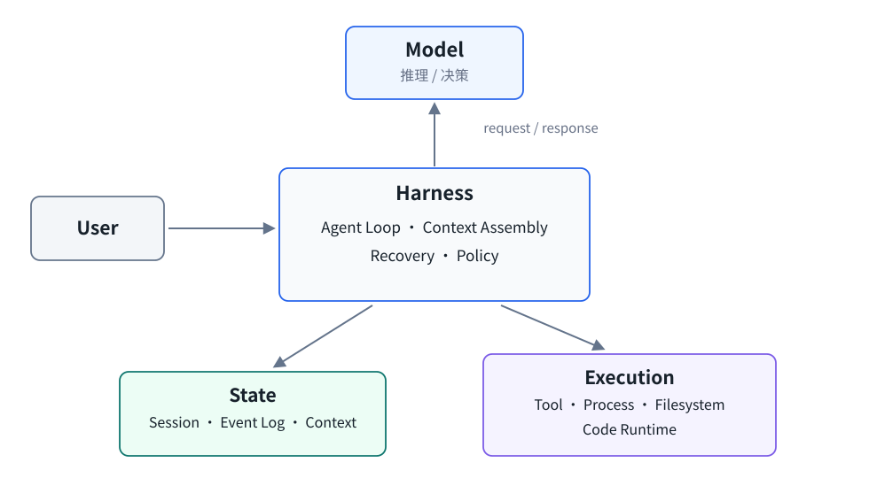
图 1-1 Model 负责推理与决策；Harness 位于 orchestration 中心，State 与 Execution 是分离的运行时平面。
一个“运行测试、找到 Bug、修改代码并再次验证”的任务会跨越多轮模型决定和本地执行。模型决定先运行测试；Harness 创建进程并记录结果；模型根据错误决定读取源码；Harness 提供文件内容并应用修改；最后 Harness 再次运行验证。工具之间的状态连续性、错误是否可见以及下一轮模型看到什么，都由 Runtime 路径决定。
1.2 DeepSeek Harness 的定位
Pinned DSH 文档把它描述为由 Cordis 驱动的 everything-is-a-plugin architecture。Cordis context 是 service 的仓库：插件通过稳定的 ctx.<key> 获取服务，而不是直接导入某个具体实现。架构文档明确列出 ctx.sessions、ctx.tools 和 ctx.agentLoop 等 seam；默认 Agent Loop 本身也是该 composition 中的 driver，而不是整个系统唯一不可替换的中心。
这是一种架构组织方式，不是“所有模块可以任意替换且没有代价”的性能承诺。Provider 是否真正可换、换后语义是否符合预期，仍需要针对具体 seam 验证。本仓库直接验证了 ctx.fs，对其他 seam 主要依赖 pinned source/docs 与相关机制实验。
1.3 本报告研究什么
本报告不研究 DeepSeek 模型能力，也不做模型 benchmark。研究对象是 DeepSeek Harness 的 Runtime 机制。OpenClaw 在这里是参照实现：它代表已经组合成完整产品路径的成熟 Agent Runtime，帮助观察不同 Harness policy 的可见结果；它不是为了形成简单胜负榜。
源码依据包括 pinned DSH 的 README.md、docs/architecture.md、Session subsystem、tool execution pipeline、TokenMeter/compaction 与 Code Mode 相关实现。实验依据来自 W1–W10；CPU 延伸依据来自 C1–C8。所有定量值由结果 JSON 自动注入。
2. 新特性一：Everything is a Plugin / Capability Seam
2.1 从固定实现到 Composition
DeepSeek Harness 不把所有 Runtime 能力固定写进 Agent Loop。它首先提供一套 boot-time composition model：启动选择 named Profile，Profile 按顺序堆叠 Bundles，再应用 profile、home 与 CLI --patch overlay，最终形成运行中的 Cordis Plugin Tree。Bundle 提供 Cordis config rows 与对应代码；上层 patch 可以增加或替换 rows；插件树再把 service/provider 挂入稳定的 ctx.* 接口。
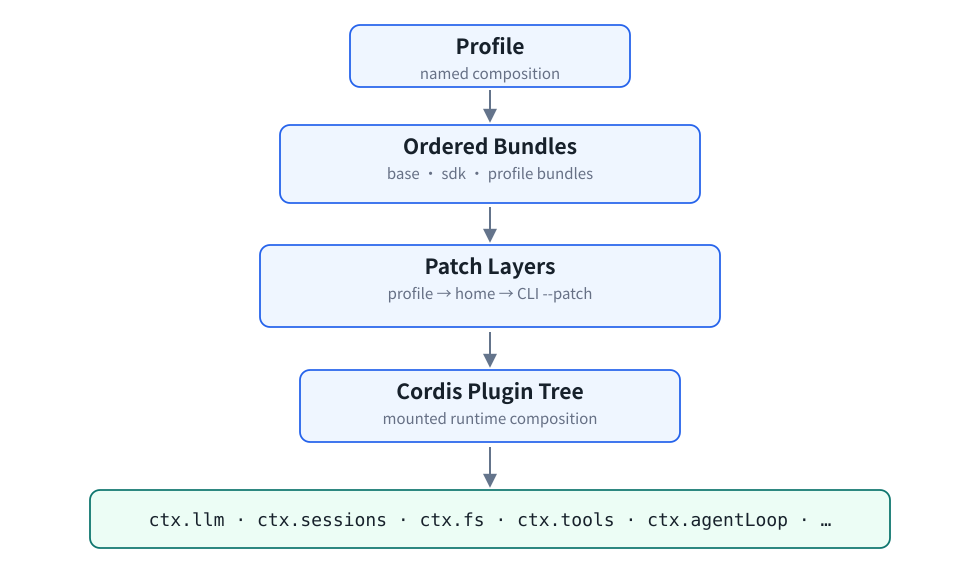
图 2-1 Profile、ordered Bundles 与 Patch Layers 在启动时共同组合出 Runtime Plugin Tree。
这意味着 Everything is a Plugin 不只是 TypeScript interface，也不只是“代码分包”。运行中的 Harness 是由 profile、bundle 和 patch 共同决定的 composition。它并不承诺所有组合都语义等价或零成本，但让配置层、生命周期和 provider 边界更显式。
2.2 Capability Seam 如何工作
完整 Agent Runtime 往往已经把 Tool、filesystem、Session 和 policy 组合进固定执行路径。这并非缺陷，但当底层存储或隔离策略变化时，consumer 与 provider 的耦合会扩大改动范围。DSH 用 Service Definition、Consumer 和 Provider 分层表达 consumer ≠ provider。
对于文件系统，tool-fs 是面向模型的 Consumer，ctx.fs 是 Capability/Service，fs-local 与 fs-sandbox 是 Provider。Consumer 依赖稳定能力，上层 composition 决定具体实现。
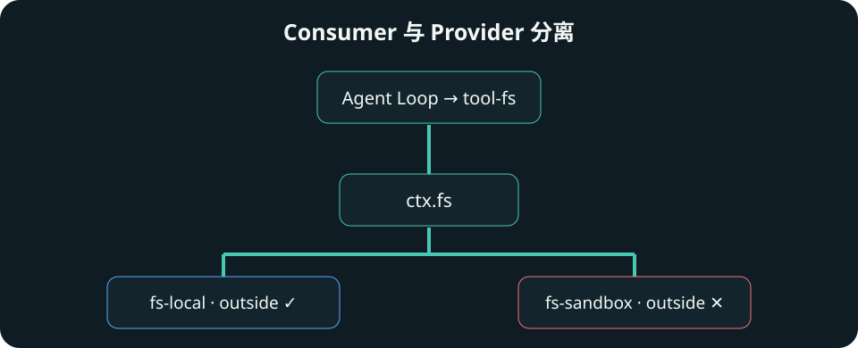
图 2-2 W10 保持 Consumer 不变，仅替换 ctx.fs Provider；local/sandbox/local 的外部写入结果随之变化。
2.3 与当前 pinned OpenClaw 的差异
OpenClaw 同样拥有 Tool、filesystem、sandbox、Session 和 extensibility，不应被描述成“没有 Runtime 抽象”。当前证据能支持的差异是：DSH 把 Profile/Bundle/Patch 与 capability/provider seam 暴露为核心 composition 模型；OpenClaw baseline 使用其已经组合完成的 Agent Runtime 路径。本仓库没有证明两者所有子系统的可替换性孰优孰劣。
2.4 W10 实际验证
W10 保持同一个 Agent Loop、同一个 tool-fs Consumer 和同一组 scripted calls，只按 fs-local → fs-sandbox → fs-local 切换 Provider。测试同时操作 workspace 内文件与预先创建、位于 workspace sibling 下的 outside 文件。
| Provider | workspace 内写入 | workspace 外写入 |
|---|---|---|
| fs-local | 成功 | OUTSIDE_CHANGED |
| fs-sandbox | 成功 | FS_SANDBOX_DENIED |
| 再切回 fs-local | 成功 | 行为恢复：是 |
因此，ctx.fs 在当前 pinned revision 中确实构成可观察的 Runtime Provider Boundary。W10 证明的是具体 seam 的替换行为，而不是对所有插件做普遍证明。
2.5 CPU 延伸与边界
Capability 与 policy 不是纯配置。路径进入 provider 后仍要执行 normalization、canonicalization、containment check 和 policy decision。C6 在 1000 次允许写入下记录的 sandbox/local wall 比为 1.064×，CPU 比为 1.102×。这些数字只用于说明 policy 有可测量执行成本。
C6 不是 container、seccomp、Firecracker 或远程 E2B sandbox benchmark；它也没有证明插件化本身总会提高性能。这里成立的结论只有：provider seam 可被行为实验观察，且 policy path 会形成 Host-side 工作。
3. 新特性二：Session Event Log
3.1 从 Messages 到 Durable Execution State
普通聊天系统常把 Session 理解为 user / assistant / tool messages 列表。DSH 的 Session abstraction 更底层：append-only SessionEvent log 记录 turn/start、user/message、assistant/message、tool/call、tool/result、step/end 和 turn/end 等 typed event。模型看到的 messages 是 deriveMessages() 从 durable state 生成的 projection。
核心区别是：Session 是 durable execution state，messages 是从 state 中派生给模型看的 projection。 Pinned 架构文档还要求 model-visible input 能从日志重建，这把上下文可见性与日志完整性联系起来。
3.2 Turn / Step 与事件流
一个 Step 是一次 Model Request 与该 Request 触发的 Tool Calls；一个 Turn 包含零个或多个 Step，从输入被接收开始，到当前执行链没有未完成工作时结束。明确这两个层级，才能解释 W4 为什么能进入 second step、W7 为什么形成 long chain，以及 W9 如何关闭 interrupted turn。
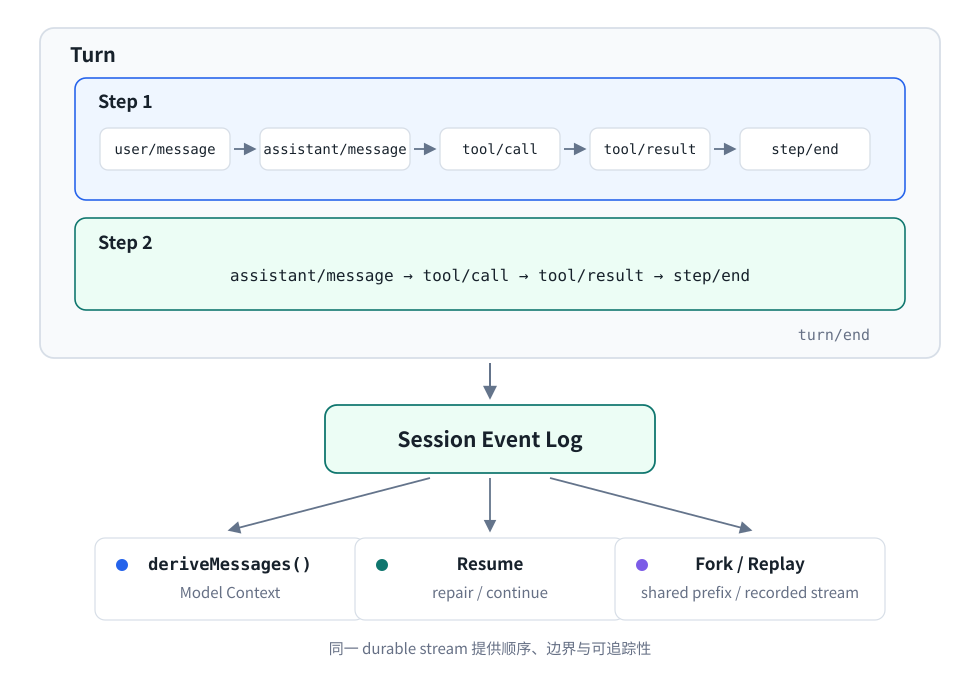
图 3-1 Turn 由 Step 组成；Model Context、Resume、Fork 与 Replay 都建立在同一 durable event stream 上。
Agent 运行中会跨越进程、工具和多个 step。只有 messages 很难表达“调用已经提交但结果尚未出现”“哪个 turn 已关闭”“从哪个稳定边界 fork”等执行状态。Append-only log 为 Resume 提供已提交前缀，为 Fork 提供稳定边界，为 Replay 提供记录流，也为 traceability 提供顺序依据。
ctx.sessions 管理 SessionEvent log；Agent Loop 和其他插件追加 typed event；deriveMessages() 把事件投影成模型历史。原始 assistant chunk 被保留以支持 replay/UI fidelity。能力来自同一事件流，但 event storage、projection、persistence 和 repair policy 是不同工作，不能把“有日志”简化为一个 JSONL 文件。
3.3 Resume / Fork / Replay：W9 验证
W9 分为三种 fixture。Crash/Resume 人为制造 tool/call 已持久化、对应 tool/result 尚未出现时进程终止；Fork 从 closed-turn boundary 创建 child；Replay 使用记录 Session 的 model stream，并将 live endpoint 指向不可达地址，以验证是否需要真实 provider credential。
Crash / Resume。 已提交 prefix byte-identical：是；dangling tool call 未重新 dispatch：是。Runtime 注入 synthetic TOOL_OUTCOME_UNKNOWN，关闭 interrupted step/turn，再从新 turn 继续。这不是 partial-turn retry，更不是承诺自动重放任意未完成 Tool。
Fork。 Parent 与 Child 在 closed-turn boundary 的 derived messages 相等：是；共享 prefix 冻结后，两侧可以独立追加。
Shared Prefix
├─ Parent → A
└─ Child → BReplay。 llm-replay 从 Session 中重放记录的 model stream/execution projection，未访问 live provider：是。它验证模型流重放，不验证现实世界 side effect 的自动再执行。
3.4 与 OpenClaw 的证据边界
两者都有 Session 与 Context 管理，OpenClaw 也有持久化、resume 和 compaction 路径。本报告不写成“OpenClaw 没有状态系统”。当前可支持的差异是：DSH 把 typed append-only Session Event Log 作为显式 Runtime abstraction，并围绕其 API 建模 Resume、Fork 和 Replay。本仓库没有实现完全对等的 OpenClaw W9，因此不做有/没有式结论。
3.5 State Plane CPU 延伸
Durable state 带来能力，也带来 Host-side append、projection、fork、persist 与 load 等 state-management workload。C2 将这些操作的 event-count slope 分开，C8 则观察长期 surface 上的 pressure accounting；定量结果统一放在 9.1 节讨论。
W9 不是 DSH 与 OpenClaw 的等价 Session 性能 benchmark，也没有证明 Event Log 在所有规模下都更快。它证明当前 DSH API 的具体 Resume/Fork/Replay semantics 可以从冻结证据重建。
4. 新特性三：Context Management / Compaction
4.1 为什么长 Agent 需要 Context Management
长 Agent 会不断追加 user、assistant、tool call 和 tool result。Runtime 需要把 durable history 投影成当前 model-visible surface，估算 pressure，在超过策略边界时生成更小的 Context，然后继续执行。因此 Context Management 不只是“token 越来越多”，而是一条持续运行的状态变换路径。
如果上下文无限增长，请求体、序列化和模型输入都会扩大；如果直接丢弃历史，又可能破坏 Tool call/result adjacency 或任务状态。Runtime 需要在预算、语义连续性和执行成本之间做明确选择。把 TokenMeter 与 compaction 作为 capability，可以让这种选择进入 composition，而不是散落在业务 prompt 中。
4.2 TokenMeter 与 Compaction 如何组合
Pinned DSH 提供 token-meter service 与 compaction-basic provider。TokenMeter 维护/测量当前 surface，compaction-basic 在 Agent lifecycle 的相应 hook 上判断 pressure 并生成压缩结果。必须强调：sdk-minimal 默认并不等价于 automatic compaction；W5 是显式加载相关 service 后的机制验证。
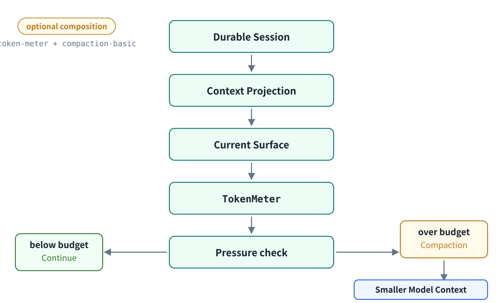
图 4-1 TokenMeter 与 compaction-basic 是可选 composition；pressure check 决定继续或生成更小 Model Context。
4.3 W5 验证
W5 使用 deterministic tool chain，让 Context 持续增长，并记录 agent request、compaction request 及每个 boundary 前后的 body bytes。DSH fixture 包含 8 次 tool call、3 次 compaction，最终完成：是。
| DSH compaction boundary | 压缩前 Agent body | 压缩后 Agent body | 下降 |
|---|---|---|---|
| 第 4 次模型请求后 | 19,823 B | 15,718 B | 4,105 B |
| 第 6 次模型请求后 | 20,162 B | 15,718 B | 4,444 B |
| 第 8 次模型请求后 | 20,162 B | 15,718 B | 4,444 B |
三个 boundary 后的下一次 agent request body 均下降，任务仍继续完成。因此 W5 支持“Context Management 是可组合 Runtime capability”，但不支持“某一套压缩内容质量普遍更好”。
4.4 OpenClaw 对照
OpenClaw 有自己的 context/compaction path。W5 通过校准不同有效预算，让两边在相同 tool-chain ordinal 附近触发压缩，以便观察 request envelope 与 context shaping；它没有把 estimator、prompt format 或 threshold 差异解释为架构优劣。两边都完成了校准 fixture，且都记录到 3 次 compaction。
4.5 C8：Context Pressure 的 CPU 延伸
C8 不是 tokenizer benchmark；它测量 pinned DSH TokenMeter/context-pressure accounting。Cold Replay 需要从 durable history 重建 meter state；Warm Repeat 在没有新 Session event 时仍重新处理当前 surface；Incremental 包含 append one text turn 加 measure。三种窗口的定量图与 slope 统一放在 9.1 节；其中 Incremental 始终使用 effective surface，而不是 initial surface 作为横轴。
5. 新特性四：Programmatic Tool Calling / Code Mode
5.1 Direct Tool Calling 的 Round Trip
Direct orchestration 中，模型每决定一个 Tool，Runtime 都需要接收 provider response、写入 tool-call event、dispatch Tool、记录 result、重建下一轮 Context，再发起模型请求。底层 Tool 很短时，重复 round trip 与 Agent Loop boundary 可能成为显著成本。
5.2 PTC 如何改变执行粒度
PTC 允许模型生成一个 Program，由本地 code runtime 在同一个外层调用中连续访问多个 Tool，再把 program outcome 返回模型。
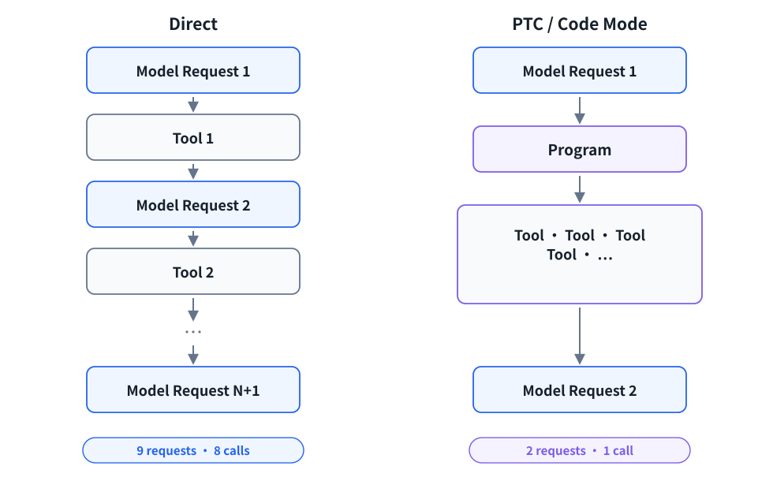
图 5-1 底层操作数相同；PTC 将多次模型可见 Tool Round Trip 折叠进一次 Program Execution。
本报告用 Executor Collapse 描述这种 workload 变化：多个模型可见 Tool Round Trip 被折叠为一次 Program Execution。该词是研究中的机制概括，不是 DeepSeek 官方新增 Feature 名称。
5.3 Tool Pipeline 与 Code Runtime
Pinned tool execution pipeline 说明 PTC 使用保留的 run_code transport，program 内部 sub-call 仍经过工具执行 pipeline，并记录 code-dispatch 事件。也就是说，PTC 不是绕过 Tool policy，而是改变外层 orchestration 与内部 dispatch 的边界。
OpenClaw 也不能被写成“物理上不能做 Code Mode”。W8 基于 OpenClaw 官方实验性 Code Mode 能力构造 deterministic fixture：其 provider request 也从 9 降到 2，请求体下降 74.107%。更克制的差异是：DeepSeek Harness 将 PTC 明确提升为 Runtime execution model；本仓库的 OpenClaw code condition 是针对当前 Runtime 能力构造的对照，不表示两者的实现、工具面或执行语义完全等价。
5.4 W8：Executor Collapse 实测
W8 固定 8 个严格有序、恰好一次的底层 shell operation。Direct condition 让每个操作成为一个 model-visible tool call；Code condition 让一个 program 在本地 dispatch 全部操作。Verifier 检查 markers 数量和顺序，确保 request 减少不是因为漏做工作。
| DSH execution condition | 底层操作 | model-visible calls | provider requests |
|---|---|---|---|
| Direct | 8 | 8 | 9 |
| Code Mode / PTC | 8 | 1 | 2 |
DSH request body 总量下降 70.554%。这证明 deterministic fixture 下的 executor collapse；它不是实际模型质量或 task latency 提升证明。
5.5 C5：固定成本与摊薄
PTC 不会无条件更快。C5 中每次 Program 执行都会创建一个 fresh Node Worker 线程，因而存在固定启动成本；operation count 增大后，Native 重复 Agent Loop/provider-boundary 工作增长更快，PTC 固定成本逐渐被摊薄。定量曲线与当前 fixture 的 crossover 区间统一放在 9.2 节；该区间不是生产推荐阈值。
6. 机制洞察：Recovery / Error Semantics
“Error as Runtime Policy”不是 DeepSeek 官方 Feature 名称。本章是从 pinned 源码与 W3/W4/W6 归纳出的 Runtime insight。
6.1 Runtime Boundary 为什么重要
Agent 失败可以发生在不同边界：provider 返回 malformed tool event；Tool 名称有效但参数不合法；命令合法但 child process 非零退出。Runtime 在哪个边界把异常结构化、以什么 observation 写入 Session，会决定模型是否获得下一次修复机会。
如果 malformed event 直接终止 turn，模型无法看到错误；如果 Runtime 能把它转为合法 tool result，Agent Loop 可能继续。但结构化也必须保留真实性，不能伪造 Tool 成功或无条件重试现实副作用。Recovery semantics 因而是 Harness policy，而不仅是“模型更聪明”。
6.2 Pinned Harness 如何体现
当前 pinned pipeline 会规范化 tool dispatch outcome，并把 model-visible error 记录到 Session。具体行为仍取决于错误到达 pipeline 的位置；W4/W6 不把所有异常合并成一个“失败率”，而是逐层隔离 provider event 与 valid tool execution。
差异只限于固定 stimulus。W4 的同一 malformed event 在 DSH 中进入 ordinary second model step；当前 pinned OpenClaw fixture 报 incomplete_turn 并终止。W6 的 valid invalid-args 与 nonzero child exit 则在两侧都能形成模型可见 observation 并继续。因此不能概括为“DSH 对所有错误都更鲁棒”。
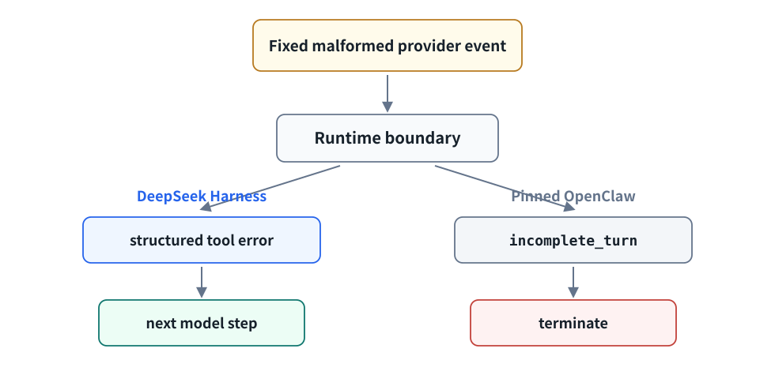
图 6-1 W4 固定 stimulus 下的观测：错误是否被结构化决定是否进入下一 Model Step；不代表所有 Error 情况。
6.3 W3 → W4 → W6 的验证链
W3 先在真实 feature task 中观察到 DSH 5/5、OpenClaw 2/5，其中部分失败表现为 incomplete_turn。但真实模型输出、Context 和执行路径都是混杂变量。W4 随后改用 deterministic SSE mock，固定一个 empty-name + truncated-arguments tool call；W6 再分别固定 invalid args 与 child exit 17。
W4 中 DSH 在 2 个 provider request 后完成：是；OpenClaw 在 1 个 request 后以 incomplete_turn 终止。W6 中 invalid args 两侧继续完成：DSH=是、OpenClaw=是；nonzero child exit 两侧继续完成：DSH=是、OpenClaw=是。
6.4 Control Plane 延伸与边界
Recovery 属于 Control Plane。结构化 error、追加事件、重建 Context 和进入下一 step 都会增加本地工作，但本仓库没有为每种 error branch 单独建立 CPU microbenchmark；C1 只提供 Agent Loop 组合成本的参照。
W4 不能外推为 DSH universally more robust；W6 也不能说明两边对所有 Tool error 的分类完全一致。更准确的结论是：Harness reliability 由 provider boundary、tool execution boundary 和 error semantics 共同决定。
7. DeepSeek Harness 与 OpenClaw 的关键差异
下表只写当前 pinned source 与实验直接支持的内容。“本实验未做对等验证”意味着不能从缺少 W fixture 推断某个 Runtime 没有能力。
| 维度 | DeepSeek Harness | 当前 pinned OpenClaw | 当前证据 | 证据边界 |
|---|---|---|---|---|
| Runtime composition | everything-is-a-plugin / capability-oriented composition | 已组合完成的完整 Runtime，并有自身扩展路径 | DSH source + W10 | W10 只直接验证 ctx.fs |
| Session abstraction | typed append-only Session Event Log，messages 由日志派生 | 有自身 Session / Context / transcript 管理 | DSH source + W9 | 未做完全对等 OpenClaw W9 |
| Recovery boundary | W4 malformed event 被结构化为 tool error 并进入下一 step | W4 pinned fixture 中 incomplete_turn | W4 / W6 | 只覆盖两类固定 stimulus |
| Context management | token-meter / compaction service 可组合 | 有自身 context/compaction path | W5 | estimator、预算与 envelope 不等价 |
| Tool execution granularity | Code Mode / PTC 是明确 execution model | baseline direct；W8 另构造 code condition | W8 | 不作产品 feature 完整性比较 |
| Resume / Fork / Replay | 当前 DSH API 显式围绕 Event Log 建模 | 本研究未实现对等 feature fixture | W9 | 不推断 OpenClaw “没有”能力 |
W2 的小型 Python Bug Fix 中，DSH 完成 4/5，OpenClaw 完成 5/5。这个每侧 5 次的 pilot 只证明两侧能执行基础 coding task，不用于速度排名。W3 的差异用于发现 malformed/recovery 问题，再由 W4 做机制隔离；这正是“真实任务提出问题，确定性实验验证机制”的研究路径。
8. 从新机制到 Host CPU Workload
前面的 W 系列回答“DeepSeek Harness 的 Runtime 机制发生了什么”；C 系列进一步回答“这些机制落到 Host 上以后形成什么本地工作”。CPU 分析由 Feature 推导而来，不是本报告的起点。
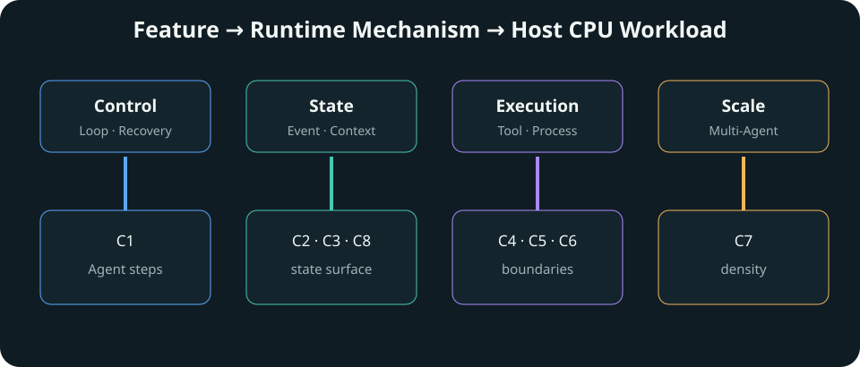
图 8-1 从 DeepSeek Design 出发的证据链；虚线表示间接或 supporting CPU evidence。
Control Plane 包括 Agent Loop、Recovery 与 Tool dispatch，对应 C1。它处理每一步状态推进和错误分支。
State Plane 包括 Event Log、Context projection、JSON/SSE serialization、TokenMeter 与 Compaction，对应 C2、C3 和 C8。它的工作集随 Agent 生命周期和 surface 增长。
Execution Plane 包括 Process lifecycle、Tool、Code Runtime 与 Filesystem Policy，对应 C4、C5 和 C6。它关注执行边界的粒度，而不只是 Tool 内部计算。
Scale Plane 包括 Multi-Agent、Runtime footprint 与 Scheduler，对应 C7。单 Agent latency 扩展为 throughput 与 density 问题。
9. C1–C8 CPU 数据与综合洞察
9.1 洞察一：长生命周期 Agent 是 growing-state workload
Session 越长，Host CPU 不只是保存更多文本，还要处理 event append、state copy/persist、Context serialization 和 recurring pressure accounting。C2 显示不同 Session 操作的 per-event slope；C3 显示逻辑 Context 从小规模扩大到 16777216 B 时，JSON encode 为 15.43 ms、decode 为 10.706 ms、SSE+JSON 为 41.94 ms；C8 则显示 Warm Repeat 即使没有新 event，仍随当前 surface 增长。
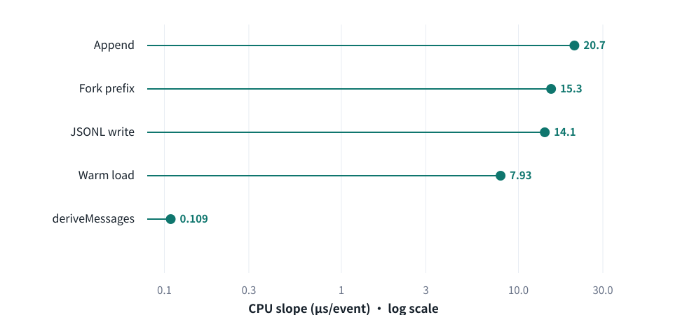
图 9-1 C2 的 log X lollipop 同时保留高成本操作与 deriveMessages 的可见性。
数据来源：`results/c2-session-count-pilot.json`；每个主要数据点 n=5；指标为 scoped internal CPU timing。当前固定 event shape 下，append slope 为 20.716 μs/event，deriveMessages slope 为 0.109 μs/event。这些 slope 用于刻画机制成本，不代表任意 Session 内容分布。
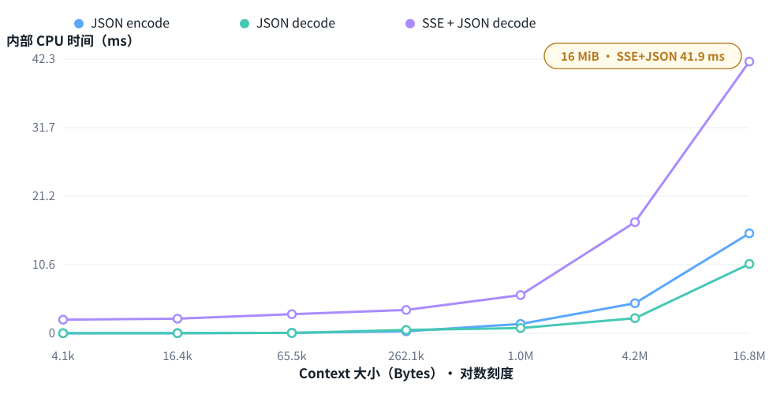
图 9-2 C3 固定消息形状，仅扩大 Context Bytes；最大 16 MiB 点只标注 SSE + JSON 组合成本。
数据来源：`results/c3-context-json-pilot.json`；每个主要数据点 n=5；不含网络、TLS 与模型计算。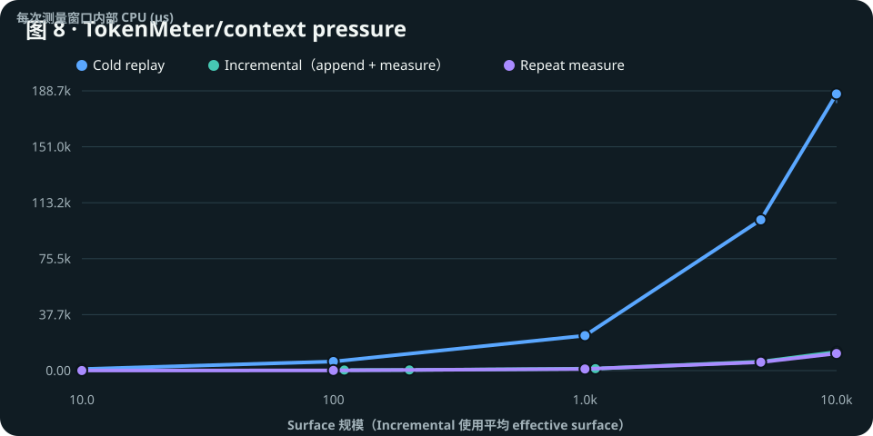
图 9-3 上图展示 Cold ≫ Warm 的数量级，下图展开 Incremental ≈ Repeat；Incremental 使用 effective surface。
数据来源：`results/c8-token-meter-*-pilot.json`；每个主要数据点 n=5；内部测量窗口不等于端到端 latency。当前 cold/repeat per-surface-node slope 比为 16.035×。Warm Repeat 成本仍随 surface 增长，说明长期 Agent 会持续产生 state traversal/pricing/clone 一类 Host 工作；Incremental 与 Repeat 接近，则提示少量新增 event 不是当前 steady-state 成本的主要部分。Shape 实验另行覆盖 text、tool call/result 与 schema surface，避免把所有节点当作完全同质。上述 slope 是固定 fixture 的 mechanism cost；Cold/Repeat 比值不是端到端 latency 倍率。
推断： Long-lived Agent 是一种 growing-state workload。这个结论描述当前机制趋势，不把 microbenchmark slope 直接等同为生产 latency。
9.2 洞察二：Tool execution granularity 很重要
当 Tool 很短时，每次 process creation、pipe、wait、result wrapping、Agent Loop 与 provider boundary 都可能占据显著比例。C4 在 1000 tiny operation 下记录 DSH managed=3.913 ms/op、raw one-shot=2.76 ms/op、persistent control=0.064 ms/op。Persistent 把 process lifecycle 移出每次 operation，因此成本显著下降；它只是 control，不代表 OpenClaw 实现。
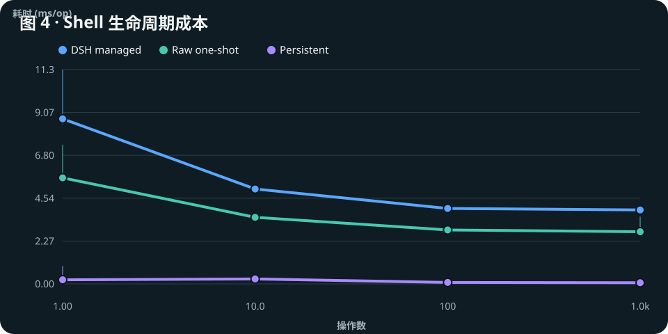
图 9-4 1000 tiny operations 聚焦图；persistent 是 benchmark control，不代表 OpenClaw implementation。
数据来源：`results/c4-shell-lifecycle-pilot.json`；每个主要数据点 n=5；X 为 log scale。C4 说明操作系统进程执行边界可以形成明显固定成本。C5 观察的是不同边界：PTC 改变 execution granularity，并且每次 Program 都创建 fresh Node Worker 线程。W8 证明底层操作保持不变时，外层 requests 可以折叠；C5 则表明 Worker 线程的固定启动成本会在高 operation count 下被重复 orchestration 的减少所摊薄。C4 与 C5 关注的固定成本不同。
当前 1024-operation fixture 中 Native 为 3170.871 ms，PTC 为 554.177 ms。两条曲线的相对次序在 64～256 operations 之间翻转；该区间由当前数据推导，不是生产 threshold。
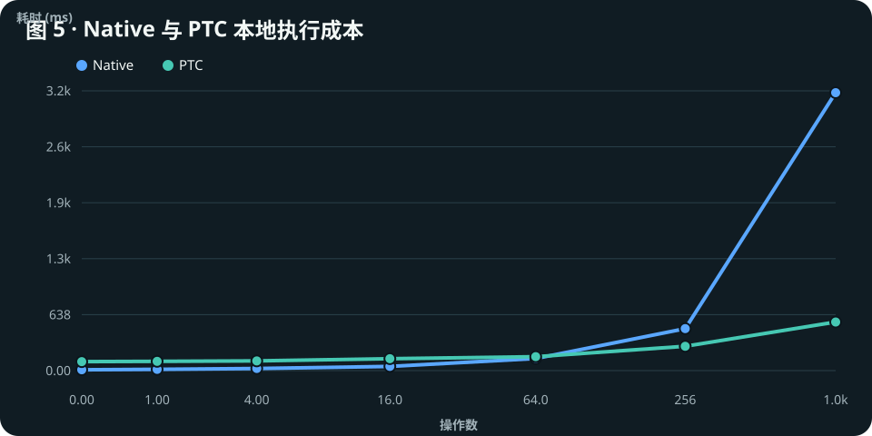
图 9-5 低操作数时 PTC 固定启动成本更明显；高操作数时重复 orchestration 逐渐被摊薄。淡色区间为当前 fixture 自动推导的 crossover bracket。
数据来源：`results/c5-code-mode-cpu-pilot.json`；每个主要数据点 n=5；使用 deterministic mock。工作负载洞察： Agent Runtime 的优化方向可能从“让单次 Tool 更快”扩展到“减少不必要的 execution boundaries”；这不是 universal optimization conclusion。
9.3 洞察三：Capability / Policy 也是可执行工作
W10 证明 policy 不只是静态配置：更换 ctx.fs provider 会改变 outside path 的结果。C6 又观察到允许请求仍有 path/policy overhead。这个结果说明 Runtime abstraction 最终会落成分支、字符串/路径处理和系统调用，但 C6 非完整 sandbox。
| C6 @ 1000 allowed writes | sandbox / local |
|---|---|
| Wall ns/op ratio | 1.064× |
| CPU μs/op ratio | 1.102× |
9.4 洞察四：Multi-Agent 变成 Runtime Density 问题
单 Agent 更关注 task latency；大量 Agent 更关注 throughput、runtime footprint 和 scheduler/capacity。C7 在固定 placement 下，32 Agents 达到 83.172 Agents/s、并行效率 72.781%。各 Agent 子进程各自最大 RSS 的累加值为 2.073 GiB，最大单 child RSS 为 71.41 MiB；该累加值不是同一时刻的整机 RSS。
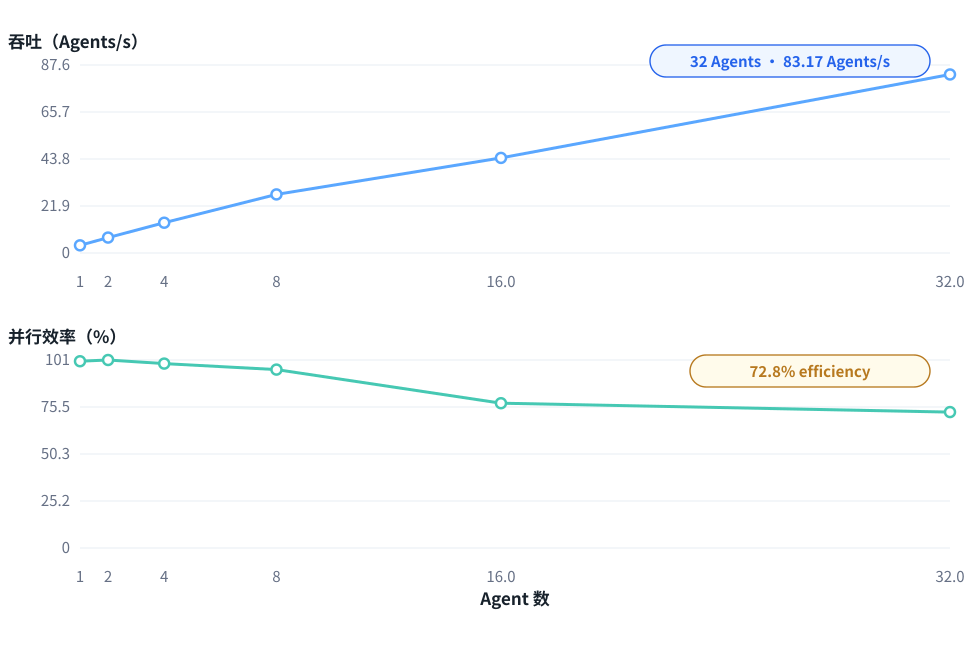
图 9-6 吞吐与效率分成共享 X 的上下两个 panel，RSS 保留在正文而不增加第三 Y 轴。
数据来源：`results/c7-agent-scaleout-pilot.json`；每个主要数据点 n=5；固定 topology/placement。推断： Scale Plane 同时关联 core、memory capacity 与 scheduler。当前数据来自单 aarch64 主机和固定 topology，不支持 ISA 或 CPU vendor 推断。
9.5 C1、C3 与 C6 的 supporting role
C1 表明 Agent Loop 在零真实 provider latency 的 cold fixture 中也会随 step 增长，但它同时包含增长中的 Session/Context，不能当作纯 dispatch 函数成本。C3 把大 Context 的 JSON/SSE 工作从模型 token compute 中分层。C6 则把 capability policy 的软件开销纳入 Execution Plane。三者补全机制地图，不单独支撑处理器排名。
W7 进一步固定 20 次连续 Tool Call；最终 request 中 DSH 与 OpenClaw 都保留 20 / 20 个 tool-result marker，请求体分别增长 4920 B 与 5420 B。这是 long tool state 持续进入 Context 的直接行为证据。
10. 证据可信度与实验边界
10.1 Real Workload：W1–W3
W2/W3 的 final workspace 可以从 committed template 加 frozen overlay 重建，template/verifier hash 被 manifest 绑定，hidden verifier 可重新运行。因此任务 outcome 与 diff 有较强可复查性。另一方面，wall time、model steps、tool calls 与 token counters 是 frozen runtime metadata；公开 evidence 不含完整 provider transcript，不能从当前仓库独立重新推导这些计数。
10.2 Deterministic Mechanism：W4–W10
这些实验使用 pinned input、local deterministic mock、minimal closure 与 frozen raw evidence，目标是隔离 malformed event、compaction、Tool failure、long chain、Code Mode、Session semantics 和 filesystem seam。它们适合回答“固定机制在 pinned revision 下怎么行为”，不等于真实模型 workload 的总体分布。
10.3 CPU：C1–C8
C 系列保留 raw samples、runner/fixture SHA、perf helper SHA、upstream revision 和环境信息。Verifier 从 raw samples 使用 protocol-bound runner logic 重算 committed aggregates、fits、comparisons 与 scaling 值，并检查与当前 pinned logic 一致。它不是 aggregation algorithm 的第二套独立实现；如果 producer 与 verifier共享的公式本身有错，该检查不能单独发现。
10.4 Provenance
| 项目 | 值 |
|---|---|
| 报告输入 SHA256 | 6cdb7ec69ac2c91b4091227eb329cc4c622549b4860899aee3b6f73b943aefb3 |
| 报告生成时 Git 状态 | bb2a033f0396 + working-tree changes |
| Pinned DeepSeek Harness | dd6322d604e00eec1ba5e0c8541159906a21094a |
| Pinned OpenClaw | 3c1b351555e0ebc1b022842523191691e89c7684 |
| Node.js | 24.15.0 |
| Evidence verification | PASS |
10.5 集中限制
- 所有 CPU pilot 来自同一 aarch64 主机，没有跨 CPU comparison。
- 每个主要数据点包含 5 个样本；用于机制与趋势观察，不提供总体性能置信结论。
- 多数机制实验使用 deterministic mock，去除了真实模型与网络 latency。
- C4 使用 tiny/no-op Tool，突出边界成本，不代表重计算工具。
- C6 是 filesystem capability policy，不是完整 OS/container/VM sandbox。
- C7 使用当前固定 topology、placement 和独立 Runtime process fixture。
- DSH 与 OpenClaw 的工具面是各自 native minimal closure，不是完全 tool-equivalent。
- W3/W4 的结论绑定当前 model/provider protocol、streaming 与 pinned parser/recovery policy。
验证命令：
python3 deepseek_harness_report/scripts/build_report.py --verify
python3 deepseek_harness_report/scripts/validate_report.py11. 总结：DeepSeek Harness 代表了什么样的 Agent Harness 演进
本次调研最重要的发现，不是某一个 benchmark 数字，而是 DeepSeek Harness 把 Agent Harness 的运行时边界进一步显式化：能力通过 composition 组织，状态以 durable event stream 建模，Context Management 成为可组合能力，Tool execution 可以从逐次调用扩展为 Programmatic Execution；与此同时，Recovery 和 Policy 也越来越表现为明确的 Runtime semantics。
这不意味着传统 Agent Runtime 没有 Session、compaction、sandbox 或 extensibility。OpenClaw 是成熟且完整的参照实现。本报告真正验证到的是：在当前 pinned revision 和固定 fixture 中，两套 Harness 对 composition、malformed event、context shaping 与 execution granularity 暴露出不同的可观察行为；未做对等实验的能力维度必须保持未知，而不能写成有/没有。
W1–W10 说明这些机制在当前 pinned revision 中具有可观察行为。真实任务用于发现问题，deterministic fixture 用于隔离机制，frozen evidence 用于重建结论。C1–C8 进一步表明，这些软件架构变化并非纯抽象：它们会具体转化成 Agent Loop、state traversal、serialization、process lifecycle、code runtime、policy enforcement 和 multi-Agent scaling 等 Host CPU workload。
CPU 分析是从 DeepSeek Harness 新机制推导出的进一步影响，而不是本报告的起点。